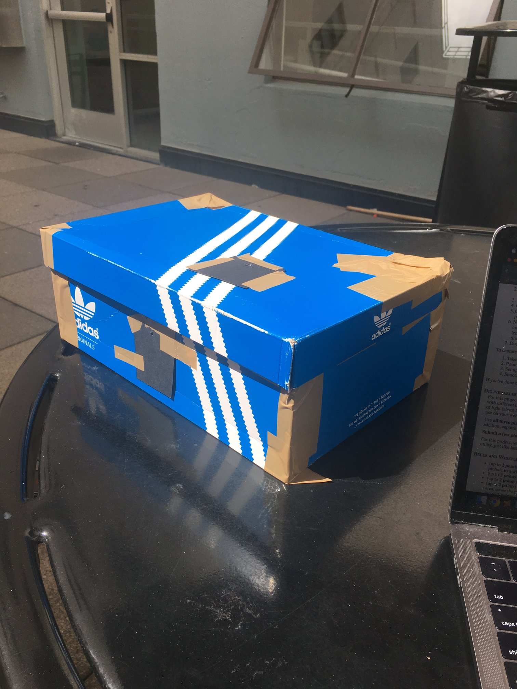

We used a cardboard box, some paper, tape, and a gopro to create a pinhole camera.
This is what our camera looks like. All images were taken with a 5 second long exposure from the gopro sitting inside of the box. The pictures it takes are upsidedown, so we flipped them.


We took images with a .1 mm pinhole. These were dark, but sharp.


We took images with a 3 mm pinhole. These were brighter, but a little bit blurrier.


We took images with a 5 mm pinhold. These were very bright, but also very blurry.


Our best pinhole size was 3mm. Here are some more pictures.